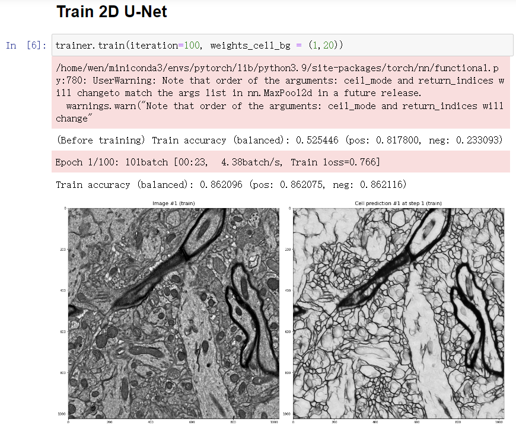
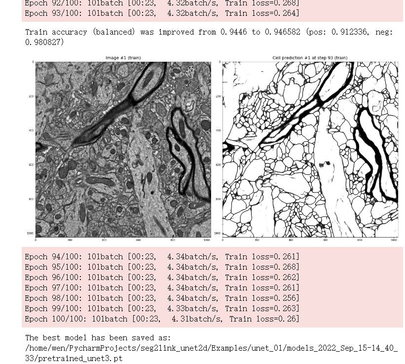
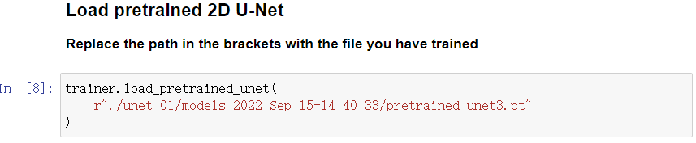
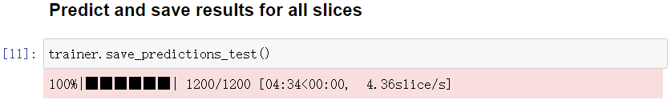

Prepare cell/non-cell predictions for Seg2Link
We will show you how to predict cell/non-cell using free software/programs. However, you can also perform these tasks using other commercial or free software.
1. Prepare raw images

You should prepare an image stack saved as 2D images of tiff format. Please note that currently our training program only supports grayscale image.
Download the Demo data.
2. Annotate cells
Here we describe the annotations with Fiji, but you can use any other tools you prefer for the annotation.
-
Drag and drop one slice of the raw image into Fiji.

-
Select a small subregion and crop:

-
Save the cropped image as train_image0000.tif, under the directory train_image

-
Double-click the paintbrush tool, and check the Paint on overlay

-
Paint the non-cell regions

-
After the painting is done, create a mask image from the overlay:


-
Invert the mask image so that non-cell regions have a value of 0:


-
Save the mask image as train_cells0000.tif, under the directory train_label
-
Repeat above procedures to make 20 or more annotations.
3. Install the deep learning environment in local PC
If you have a CUDA-enabled GPU, you can install the deep learning environment on your local PC. If not, you can skip this step and use the free GPU resource and deep learning environment in Google Colab.
- Install Anaconda or Miniconda
- Launch the Anaconda PowerShell Prompt in Windows or the terminal in macOS/Linux. Create a new conda environment with a custom name, such as unet2d, and activate it by running following commands:
$ conda create -n unet2d
$ conda activate unet2d
- Install Pytorch in the unet2d environment
- Install seg2Link-unet2d in the unet2d environment:
(unet2d) $ pip install seg2Link-unet2d[local]
4. Launch the notebook for training
1) Launch the notebook in your local PC
- Right click to download the notebook (link)
- If the file is saved with .txt extension, change it to .ipynb.
- Move to the directory containing the notebook. (replace C:/xxx/xxx/ with the real path)
(unet2d) $ cd C:/xxx/xxx/
- Place your raw images and training data into a directory with a custom name such as unet_01. The directory unet_01 should be placed in the same parent directory as the training notebook:
C:/xxx/xxx
├───Training_notebook_xxx.ipynb
└───unet_01
├───raw_image
│ ├───raw_image0000.tif
│ ├───raw_image0001.tif
│ ├───raw_image0002.tif
│ └───...
├───train_image
│ ├───train_image0000.tif
│ ├───train_image0001.tif
│ ├───train_image0002.tif
│ └───...
└───train_label
├───train_cells0000.tif
├───train_cells0001.tif
├───train_cells0002.tif
└───...
- Launch the jupyter notebook
(unet2d) $ jupyter notebook
- Open the notebook and proceed to step 5 below for training.
2) Launch the notebook in Google Colab
- Right click to download the notebook (link)
- If the file is saved with .txt extension, change it to .ipynb.
- Launch Google Colab and upload the downloaded notebook
- Enable GPUs in Google Colab:
- Navigate to Edit → Notebook Settings
- Select GPU from the Hardware Accelerator drop-down
- Place your raw images and training data into a directory with a custom name such as unet_01. Upload unet_01 to the root of your Google drive:
root of your Google drive
└───unet_01
├───raw_image
│ ├───raw_image0000.tif
│ ├───raw_image0001.tif
│ ├───raw_image0002.tif
│ └───...
├───train_image
│ ├───train_image0000.tif
│ ├───train_image0001.tif
│ ├───train_image0002.tif
│ └───...
└───train_label
├───train_cells0000.tif
├───train_cells0001.tif
├───train_cells0002.tif
└───...
-
Install seg2link-unet2d.
-
Mount your Google drive.
-
You'll be asked to give Google Colab permission to access your Google Drive.
-
-
Proceed to step 5 below for training.
5. Train 2D U-Net
The steps below apply to both local PCs and Google Colab.
-
Run the code (Shift+Enter) to load packages.
If no error occurs (warnings can be ignored), the seg2link-unet2d has been installed correctly.
-
Initialize the trainer
-
Load the training data

-
Normalize the training data
-
Divide images into subregions and apply augmentation
-
Start training
- By default, you will apply 10 iterations x 3 times of training. But you can change the parameter iteration and apply more or less times of training.
- Everytime the accuracy is improved, the model will be saved, and the prediction will be updated and displayed.
-
Results (Epochs 1-2)

-
Results (Epochs 25-30)

6. Predict cell regions
-
Load the model that was saved during training. You must replace the models_xxx in the path with the directory created when initializing the trainer.
- By default, the best model with the highest accuracy (pretrained_unet3.pt) will be loaded.

- But you can also choose a different model exist in the models_xxx directory (such like weights_training_epoch20.pt).
-
Calculate and display the prediction in a specified slice.
-
If you are satisfied with the prediction, predict in all slices. The predictions will be saved into the directory raw_label under unet_01
